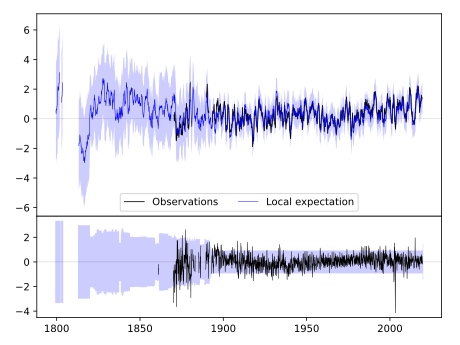
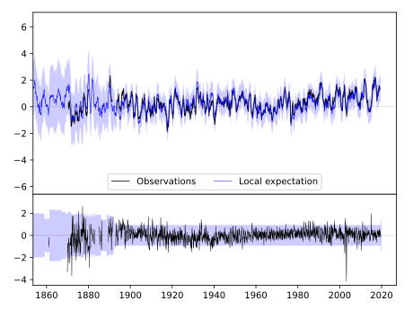
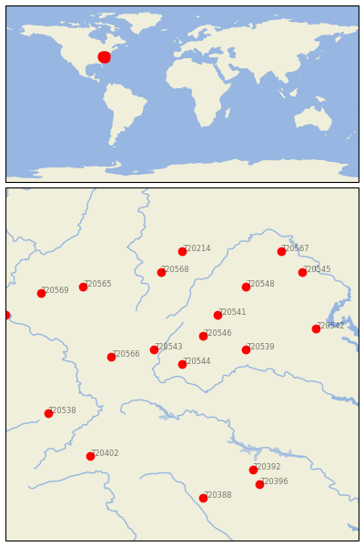

LEXINGTON [USA]


| Neighbour | Name | Country | Distance | Lon/Lat | Years |
|---|
| 720544 | LEXINGTON | USA | 0 | -79.4, 37.8 | 1861-2019 |
| 720543 | HOT SPRINGS | USA | 41 | -79.8, 38.0 | 1892-2019 |
| 720546 | STAUNTON WATER TRMTM | USA | 51 | -79.1, 38.2 | 1893-2019 |
| 720539 | CHARLOTTESVILLE 2W | USA | 82 | -78.5, 38.0 | 1837-2019 |
| 720566 | LEWISBURG 3 N | USA | 88 | -80.4, 37.9 | 1893-2019 |
| 720541 | DALE ENTERPRISE | USA | 89 | -78.9, 38.5 | 1893-2019 |
| 720548 | WOODSTOCK 2 NE | USA | 145 | -78.5, 38.9 | 1893-2019 |
| 720568 | PARSONS 1 NE | USA | 146 | -79.7, 39.1 | 1878-2019 |
| 720565 | GLENVILLE | USA | 172 | -80.8, 38.9 | 1893-2019 |
| 720542 | FREDERICKSBURG NP | USA | 175 | -77.5, 38.3 | 1893-2019 |
| 720214 | OAKLAND 1 SE | USA | 177 | -79.4, 39.4 | 1877-2019 |
| 720402 | MT AIRY 2 W | USA | 184 | -80.7, 36.5 | 1889-2019 |
| 720538 | BURKES GARDEN | USA | 184 | -81.3, 37.1 | 1892-2019 |
| 720392 | HENDERSON 2 NNW | USA | 188 | -78.4, 36.3 | 1892-2019 |
| 720545 | LINCOLN | USA | 206 | -77.7, 39.1 | 1893-2019 |
| 720569 | SPENCER | USA | 206 | -81.4, 38.8 | 1892-2019 |
| 720396 | LOUISBURG | USA | 212 | -78.3, 36.1 | 1891-2019 |
| 720388 | CHAPEL HILL 2 W | USA | 212 | -79.1, 35.9 | 1820-2019 |
| 720567 | MARTINSBURG E WV RGN | USA | 215 | -78.0, 39.4 | 1891-2019 |
| 720573 | WINFIELD LOCKS | USA | 232 | -81.9, 38.5 | 1893-2019 |